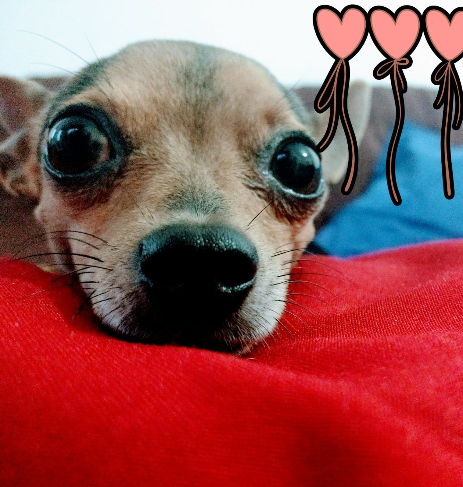
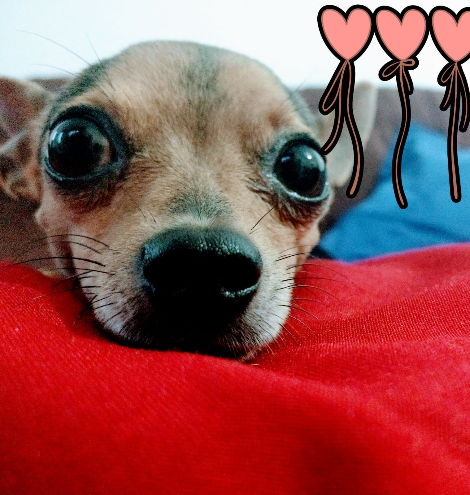

Esta é Mel. Uma pinscher muito especial. Quando Mel foi morar conosco tinha apenas dois meses de nascida, e era menor que a palma de minha mão. Um bebê cachorro muito bagunceira, ela simplesmente destruiu 3 chinelos enquanto seus dentinhos cresciam e se fortaleciam. Ele me escolheu como dona, apesar de pertencer a minha filha. E era uma cachorrinha muito ciumenta, mas também muito carinhosa. O brinquedo preferido da Mel era a cocó, uma galinha de plástico amarela. E gostava muito de buscar a bolinha também. A forma de Mel fazer xixi era muito engraçada, ela levantava as pernas de trás e ficava de cabeça para baixo, e aí soltava o xixi. Outra coisa interessante de Mel, é que ela não gostava do cachorro da raça chow chow, evitava passar perto deles. Eu acho que Mel não reconhecia essa raça como cachorro. Mel morreu com 11 anos de idade, por causa de uma doença no útero. Deixou um vazio muito grande em nossa casa. Toda vez que eu como batata-doce ou maça, me emociono de saudade da Mel Sou muito feliz pelo tempo que passei com Mel, ela estará para sempre em meu coração


 
